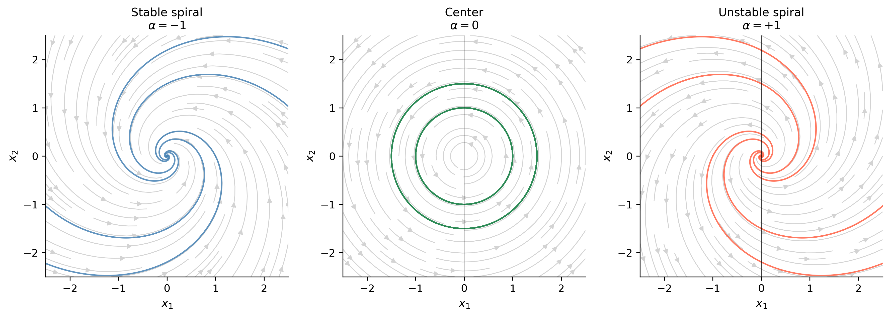
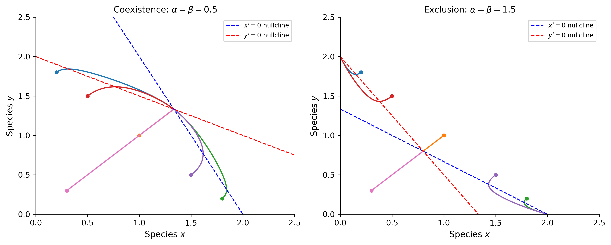

# Imports for the entire sessionimport numpy as np # NumPy for numerical computationsimport sympy as sym # SymPy for symbolic mathematicsimport matplotlib as mpl # Matplotlib for plottingimport matplotlib.pyplot as plt # Matplotlib pyplot interfacefrom matplotlib.patches import FancyArrowPatchfrom scipy.integrate import solve_ivp # SciPy numerical ODE solverfrom IPython.display import Math, displaympl.rcParams['figure.dpi'] =150mpl.rcParams['axes.spines.top'] =Falsempl.rcParams['axes.spines.right'] =False
This document reviews Chapters 4 and 5 of Logan’s A First Course in Differential Equations (3rd ed.): Linear Systems (Chapter 4) and Nonlinear Systems (Chapter 5). It is structured as a companion to review_01.qmd (Chapters 1–2) and review_02.qmd (Chapter 3): each section states the key idea, works through a representative example by hand, and demonstrates the same calculation or visualization in Python.
The central thread of both chapters is the phase plane: once we write a system of two first-order ODEs as \(\mathbf{x}' = \mathbf{f}(\mathbf{x})\), the geometry of solution curves in the \((x_1, x_2)\)-plane reveals stability, oscillation, and long-term behavior without solving explicitly.
C.1 — First-Order Systems and the Phase Plane
A first-order system rewrites any \(n\)th-order ODE — or models any multi-variable process — as \[
\mathbf{x}'(t) = \mathbf{f}(t, \mathbf{x}), \qquad
\mathbf{x} = \begin{pmatrix} x_1 \\ x_2 \end{pmatrix},\quad
\mathbf{f} = \begin{pmatrix} f_1 \\ f_2 \end{pmatrix}.
\]
Converting a second-order ODE to a system (Logan, §4.1). The equation \(x'' + bx' + cx = f(t)\) becomes \[
x_1' = x_2, \qquad x_2' = f(t) - bx_2 - cx_1,
\] by setting \(x_1 = x\) (position) and \(x_2 = x'\) (velocity).
By Hand
Example. Convert the damped spring–mass equation \(x'' + 0.4x' + 2x = 0\) to a first-order system and identify its matrix form.
Figure 1: Phase portrait (left) and time series (right) for the damped oscillator \(x''+0.4x'+2x=0\). All trajectories spiral into the origin (stable spiral).
Tip
Pattern. To convert an \(n\)th-order ODE to a system: let \(x_1 = x,\; x_2 = x',\;\ldots,\; x_n = x^{(n-1)}\). The resulting system matrix \(\mathbf{A}\) is called the companion matrix of the ODE.
C.2 — Matrix Algebra Essentials
A linear system\(\mathbf{x}' = A\mathbf{x}\) (constant \(2\times 2\) matrix \(A\)) governs the dynamics near equilibria. Key definitions (Logan, §4.2):
Determinant: \(\det A = ad - bc\) for \(A = \bigl(\begin{smallmatrix}a&b\\c&d\end{smallmatrix}\bigr)\).
Trace: \(\text{tr}\,A = a + d\).
Characteristic equation: \(\det(A - \lambda I) = 0\), i.e. \(\lambda^2 - (\text{tr}\,A)\lambda + \det A = 0\).
Pattern. For \(2\times 2\) systems, the characteristic equation \(\lambda^2 - (\text{tr}\,A)\lambda + \det A = 0\) gives eigenvalues from trace and determinant alone — no row reduction needed.
C.3 — Solving Linear Systems: Real Unequal Eigenvalues
When \(A\) has two real, distinct eigenvalues \(\lambda_1 \neq \lambda_2\) with eigenvectors \(\mathbf{v}_1\), \(\mathbf{v}_2\), the general solution is (Logan, §4.4.1) \[
\mathbf{x}(t) = c_1\,e^{\lambda_1 t}\mathbf{v}_1 + c_2\,e^{\lambda_2 t}\mathbf{v}_2.
\]
Equilibrium classification from the sign of the eigenvalues:
Figure 2: Phase portrait for \(\mathbf{x}' = A\mathbf{x}\) with eigenvalues \(\lambda_1=4\) (unstable) and \(\lambda_2=-1\) (stable). The origin is a saddle point: trajectories approach along the stable manifold (dashed) and are repelled along the unstable manifold (dotted).
C.4 — Complex Eigenvalues: Spirals and Centers
When \(A\) has complex eigenvalues \(\lambda = \alpha \pm \beta i\) (\(\beta \neq 0\)), Euler’s formula gives two real solutions (Logan, §4.4.2): \[
\mathbf{x}_1(t) = e^{\alpha t}(\mathbf{a}\cos\beta t - \mathbf{b}\sin\beta t),
\quad
\mathbf{x}_2(t) = e^{\alpha t}(\mathbf{a}\sin\beta t + \mathbf{b}\cos\beta t),
\] where \(\mathbf{v} = \mathbf{a} + i\mathbf{b}\) is a complex eigenvector.
Classification by \(\alpha = \text{Re}(\lambda)\):
\(\displaystyle x_{1}{\left(t \right)} = - C_{1} e^{- t} \sin{\left(2 t \right)} - C_{2} e^{- t} \cos{\left(2 t \right)}\)
\(\displaystyle x_{2}{\left(t \right)} = C_{1} e^{- t} \cos{\left(2 t \right)} - C_{2} e^{- t} \sin{\left(2 t \right)}\)
Show the code
systems = [ (lambda t, y: [-y[0]-2*y[1], 2*y[0]-y[1]], 'Stable spiral\n$\\alpha=-1$', 'steelblue'), (lambda t, y: [ -2*y[1], 2*y[0] ], 'Center\n$\\alpha=0$', 'seagreen'), (lambda t, y: [ y[0]-2*y[1], 2*y[0]+y[1] ], 'Unstable spiral\n$\\alpha=+1$', 'tomato'),]fig, axes = plt.subplots(1, 3, figsize=(12, 4))ics_c = [(1, 0), (-1, 0), (0, 1.5), (0, -1.5)]for ax, (rhs, title, color) inzip(axes, systems): x1g = np.linspace(-2.5, 2.5, 20) X1c, X2c = np.meshgrid(x1g, x1g) dX1c = np.array([[rhs(0,[xi,yi])[0] for xi in x1g] for yi in x1g]) dX2c = np.array([[rhs(0,[xi,yi])[1] for xi in x1g] for yi in x1g]) spd = np.sqrt(dX1c**2+ dX2c**2); spd[spd==0] =1 ax.streamplot(X1c, X2c, dX1c/spd, dX2c/spd, density=0.9, color='lightgray', linewidth=0.8) t_fwd = np.linspace(0, 6, 600) t_bwd = np.linspace(0, -6, 600)for ic in ics_c:for t_ev in [t_fwd, t_bwd]: s = solve_ivp(rhs, (t_ev[0], t_ev[-1]), list(ic), t_eval=t_ev, rtol=1e-9) idx = escaped(s.y, limit=3.0) ax.plot(s.y[0, :idx], s.y[1, :idx], color=color, lw=1.4, alpha=0.85) ax.set_xlim(-2.5, 2.5); ax.set_ylim(-2.5, 2.5) ax.axhline(0, color='k', lw=0.4); ax.axvline(0, color='k', lw=0.4) ax.set_xlabel(r'$x_1$', fontsize=11) ax.set_ylabel(r'$x_2$', fontsize=11) ax.set_title(title, fontsize=11) ax.set_aspect('equal')plt.tight_layout()plt.show()

Figure 3: Phase portraits for three qualitative types arising from complex eigenvalues \(\lambda = \alpha \pm \beta i\). Left: stable spiral (\(\alpha<0\)). Center: center (\(\alpha=0\)). Right: unstable spiral (\(\alpha>0\)).
Tip
Pattern. Complex eigenvalues \(\alpha \pm \beta i\): the real part \(\alpha\) controls whether trajectories spiral in (\(\alpha<0\)), spiral out (\(\alpha>0\)), or orbit (\(\alpha=0\)); the imaginary part \(\beta\) sets the angular frequency.
C.5 — Repeated Eigenvalues
When \(A\) has a repeated eigenvalue \(\lambda\) (Logan, §4.4.3), two cases arise.
Case 1 — Two independent eigenvectors (rare for \(2\times2\)): the general solution is \(\mathbf{x}=e^{\lambda t}(c_1\mathbf{v}_1 + c_2\mathbf{v}_2)\) (star node).
Case 2 — One eigenvector (typical): find a generalized eigenvector\(\mathbf{w}\) satisfying \((A-\lambda I)\mathbf{w} = \mathbf{v}\). Then \[
\mathbf{x}(t) = c_1 e^{\lambda t}\mathbf{v}
+ c_2 e^{\lambda t}(t\mathbf{v} + \mathbf{w}).
\]
C.6 — Phase Plane Analysis and Equilibrium Classification
For a \(2\times2\) linear system \(\mathbf{x}' = A\mathbf{x}\), the complete classification of the equilibrium at the origin depends on the trace\(\tau = \text{tr}\,A\) and determinant\(\Delta = \det A\) (Logan, §4.5):
Figure 4: The trace–determinant plane classifying equilibria of \(\mathbf{x}'=A\mathbf{x}\). The parabola \(\tau^2 = 4\Delta\) separates real (outside) from complex (inside) eigenvalues. The vertical axis \(\tau=0\) separates stable (left) from unstable (right).
# Quick Python classifier: given A, report the equilibrium typedef classify_equilibrium(A_mat): tr =float(A_mat.trace()) det =float(A_mat.det()) disc = tr**2-4*detif det <0:return"Saddle"elif disc >0:return"Stable node"if tr <0else"Unstable node"elif disc <0:return"Stable spiral"if tr <0else ("Unstable spiral"if tr >0else"Center")else:return"Star node / degenerate"examples = [ sym.Matrix([[1, 2], [3, 2]]), # saddle sym.Matrix([[-1,-2], [2, -1]]), # stable spiral sym.Matrix([[ 1, 2], [-2, 1]]), # unstable spiral sym.Matrix([[ 0,-2], [2, 0]]), # center sym.Matrix([[-2, 0], [0, -3]]), # stable node]for M in examples: etype = classify_equilibrium(M) evals_str = [str(sym.simplify(e)) for e in M.eigenvals()]print(f"A = {list(M.tolist())} → {etype} (eigenvalues: {evals_str})")
The system \(\mathbf{x}' = A\mathbf{x} + \mathbf{f}(t)\) with a forcing term \(\mathbf{f}(t)\) has general solution (Logan, §4.6) \[
\mathbf{x}(t) = \mathbf{x}_h(t) + \mathbf{x}_p(t),
\] where \(\mathbf{x}_h\) solves the homogeneous system and \(\mathbf{x}_p\) is any particular solution. The variation of parameters formula gives \[
\mathbf{x}_p(t) = \Phi(t)\int \Phi(t)^{-1}\mathbf{f}(t)\,dt,
\] where \(\Phi(t)\) is the fundamental matrix whose columns are the two independent solutions.
For a nonlinear autonomous system \(\mathbf{x}' = \mathbf{f}(\mathbf{x})\), let \(\mathbf{x}^*\) be an equilibrium (\(\mathbf{f}(\mathbf{x}^*) = \mathbf{0}\)). The Jacobian matrix at \(\mathbf{x}^*\) is (Logan, §5.1) \[
J(\mathbf{x}^*) = \begin{pmatrix}
\partial f_1/\partial x_1 & \partial f_1/\partial x_2 \\
\partial f_2/\partial x_1 & \partial f_2/\partial x_2
\end{pmatrix}_{\mathbf{x}=\mathbf{x}^*}.
\] The linearized system\(\mathbf{u}' = J(\mathbf{x}^*)\mathbf{u}\) (where \(\mathbf{u} = \mathbf{x} - \mathbf{x}^*\)) approximates the nonlinear dynamics near the equilibrium, and its eigenvalues determine local stability — provided neither eigenvalue has zero real part (hyperbolic equilibrium).
By Hand
Example. Find and classify the equilibria of the nonlinear system (Logan, §5.1) \[
x_1' = x_1 - x_1 x_2, \qquad x_2' = -x_2 + x_1 x_2.
\] (This is the Lotka–Volterra predator–prey model with \(r = K = 1\).)
Equilibria. Set \(f_1 = f_2 = 0\): \(x_1(1 - x_2) = 0\) and \(x_2(-1 + x_1) = 0\). Solutions: \((0, 0)\) and \((1, 1)\).
At \((1,1)\): \(J = \begin{pmatrix}0&-1\\1&0\end{pmatrix}\), eigenvalues \(\lambda = \pm i\) → center (neutrally stable in the linearization; nonlinear analysis confirms it is a true center for this model).
Pattern. For a nonlinear system: (1) find equilibria by setting \(\mathbf{f} = \mathbf{0}\); (2) compute \(J\) symbolically; (3) evaluate \(J\) at each equilibrium and classify using trace/determinant or eigenvalues.
C.9 — The Lotka–Volterra Predator–Prey Model
The classical Lotka–Volterra system (Logan, §5.3.1) models predator (\(y\)) and prey (\(x\)) populations: \[
x' = ax - bxy, \qquad y' = -cy + dxy,
\] where \(a, b, c, d > 0\). The nontrivial equilibrium is \((c/d,\, a/b)\). Solutions are closed orbits around this equilibrium — periodic oscillations — which can be confirmed by a conserved energy-like quantity.
By Hand
Equilibria (with \(a=b=c=d=1\)): \((0,0)\) (saddle) and \((1,1)\) (center).
Conservation law. Dividing \(y'/x' = (-y+xy)/(x-xy)\) and separating: \[
\frac{(-1+x)}{x}\,dx = \frac{(1-y)}{y}\,dy
\quad\Longrightarrow\quad
\ln x - x + \ln y - y = \text{const},
\] confirming closed orbits.
Figure 5: Lotka–Volterra predator–prey dynamics (\(a=b=c=d=1\)). Left: phase portrait showing closed orbits around the coexistence equilibrium \((1,1)\). Right: time series — prey (blue) and predator (red) oscillate out of phase.
C.10 — Nonlinear Mechanics: The Pendulum
The undamped nonlinear pendulum (Logan, §5.2) obeys \[
\theta'' + \frac{g}{L}\sin\theta = 0,
\] or as a system: \(\theta' = \omega\), \(\omega' = -(g/L)\sin\theta\).
Equilibria: \((\theta, 0)\) with \(\sin\theta = 0\), i.e. \(\theta = n\pi\).
A conserved energy\(E = \frac{1}{2}\omega^2 - \frac{g}{L}\cos\theta\) (constant along trajectories) explains the closed orbits (oscillations) and the separatrix connecting the saddle points (the boundary between oscillation and full rotation).
Figure 6: Phase portrait of the nonlinear pendulum (\(g/L=1\)). Closed orbits (blue) are small-amplitude oscillations. The red separatrix passes through the unstable equilibrium \((\pm\pi, 0)\) and separates oscillatory from rotational motion.
C.11 — Population Ecology: Competing Species
The two-species competition model (Logan, §5.3.2) is \[
x' = r_1 x\!\left(1 - \frac{x + \alpha y}{K_1}\right),
\qquad
y' = r_2 y\!\left(1 - \frac{y + \beta x}{K_2}\right),
\] where \(\alpha, \beta\) are competition coefficients. Equilibria include \((0,0)\), \((K_1,0)\), \((0,K_2)\), and potentially a coexistence point. The outcome (which species wins) depends on whether the nullclines intersect inside the positive quadrant and the stability of boundary equilibria.
By Hand (nullcline analysis)
\(x\)-nullclines (\(x'=0\)): \(x=0\) or \(x + \alpha y = K_1\).
\(y\)-nullclines (\(y'=0\)): \(y=0\) or \(\beta x + y = K_2\).
The two non-trivial nullclines intersect at a coexistence equilibrium if and only if the linear system \(x + \alpha y = K_1\), \(\beta x + y = K_2\) has a solution with \(x,y > 0\).
Phase Portrait
Show the code
def comp_rhs(t, y, r1=1, r2=1, K1=2, K2=2, alpha=0.5, beta=0.5): x, z = y xdot = r1*x*(1- (x + alpha*z)/K1) if x >0else0 zdot = r2*z*(1- (z + beta*x)/K2) if z >0else0return [xdot, zdot]fig, axes = plt.subplots(1, 2, figsize=(11, 4.5))param_sets = [dict(alpha=0.5, beta=0.5, title=r'Coexistence: $\alpha=\beta=0.5$'),dict(alpha=1.5, beta=1.5, title=r'Exclusion: $\alpha=\beta=1.5$'),]ics_comp = [(0.2, 1.8), (1.0, 1.0), (1.8, 0.2), (0.5, 1.5), (1.5, 0.5), (0.3, 0.3)]for ax, params inzip(axes, param_sets): rhs_keys = {k: v for k, v in params.items() if k !='title'} rhs =lambda t, y, p=rhs_keys: comp_rhs(t, y, **p) colors_c = plt.cm.tab10(np.linspace(0, 0.6, len(ics_comp)))for ic, color inzip(ics_comp, colors_c): sol = solve_ivp(rhs, (0, 15), list(ic), t_eval=np.linspace(0, 15, 800), rtol=1e-9) ax.plot(sol.y[0], sol.y[1], color=color, lw=1.5) ax.plot(ic[0], ic[1], 'o', color=color, ms=4)# Nullclines x_nc = np.linspace(0, 2.5, 200) alpha, beta = params['alpha'], params['beta'] ax.plot(x_nc, (2- x_nc)/alpha, 'b--', lw=1.2, label=r"$x'=0$ nullcline") ax.plot(x_nc, 2- beta*x_nc, 'r--', lw=1.2, label=r"$y'=0$ nullcline") ax.set_xlim(0, 2.5); ax.set_ylim(0, 2.5) ax.set_xlabel('Species $x$', fontsize=11) ax.set_ylabel('Species $y$', fontsize=11) ax.set_title(params['title'], fontsize=11) ax.legend(fontsize=8)plt.tight_layout()plt.show()

Figure 7: Competition model phase portraits for two parameter regimes. Left: \(\alpha=0.5, \beta=0.5\) (coexistence — stable interior equilibrium). Right: \(\alpha=1.5, \beta=1.5\) (competitive exclusion — one species wins depending on initial conditions).
C.12 — The SIR Epidemic Model
The SIR model (Logan, §5.3.3) tracks Susceptible (\(S\)), Infected (\(I\)), and Recovered (\(R\)) individuals: \[
S' = -\beta SI, \qquad I' = \beta SI - \gamma I, \qquad R' = \gamma I,
\] with \(N = S + I + R\) constant. Since \(R = N - S - I\), only two equations are needed.
Figure 8: SIR epidemic model with \(\beta=0.3\), \(\gamma=0.1\), \(N=1000\), giving \(\mathcal{R}_0=3\). Left: trajectories in the \((S,I)\) plane for several initial conditions. Right: time series showing the epidemic curve \(I(t)\) (red) and \(S(t)\) (blue).
Tip
Pattern. For multi-species or compartment models: find equilibria from \(\mathbf{f}=\mathbf{0}\), compute \(J\) at each, classify. Draw nullclines (\(f_i=0\) curves) in the phase plane — their intersections locate equilibria and their geometry reveals which region each trajectory enters.
C.13 — Selected Review Exercises
Exercise C.1 — Full Analysis of a Linear System
Problem. For the system \(\mathbf{x}' = \begin{pmatrix}-3&1\\1&-3\end{pmatrix}\mathbf{x}\): (a) find eigenvalues and eigenvectors; (b) write the general solution; (c) classify the equilibrium; (d) solve the IVP with \(\mathbf{x}(0) = (2, 0)^T\).
Figure 9: Phase portrait for Exercise C.1. The origin is a stable node; all trajectories approach it along the slow eigendirection \(\mathbf{v}_1=(1,1)^T\) (\(\lambda_1=-2\)), with the fast component (\(\lambda_2=-4\)) decaying first.
Exercise C.2 — Nonlinear System: Full Analysis
Problem. Analyze all equilibria of the nonlinear system \[
x_1' = x_1(2 - x_1 - x_2), \qquad x_2' = x_2(3 - x_1 - 2x_2).
\] (This is a competition model with \(K_1=2\), \(K_2=3/2\), \(\alpha=\beta=1\).)
Figure 10: Phase portrait for the competition model in Exercise C.2. The coexistence equilibrium \((1,1)\) is a saddle — competitive exclusion occurs. Trajectories go to either \((2,0)\) or \((0,3/2)\) depending on initial conditions.
Exercise C.3 — Numerical Exploration: Chaos in the Lorenz System
As a capstone, we explore the Lorenz system (a famous nonlinear 3D system), which exhibits sensitive dependence on initial conditions — the hallmark of chaos. While beyond Logan’s scope, it illustrates the power of solve_ivp for nonlinear systems: \[
x' = \sigma(y - x), \quad y' = x(\rho - z) - y, \quad z' = xy - \beta z,
\] with \(\sigma = 10\), \(\rho = 28\), \(\beta = 8/3\).
Figure 11: The Lorenz attractor (\(\sigma=10, \rho=28, \beta=8/3\)). Left: the butterfly-shaped attractor in the \((x,z)\)-plane. Right: two trajectories with nearly identical initial conditions (difference \(10^{-8}\)) diverge exponentially — sensitive dependence, the signature of chaos.
C.14 — Summary: Systems Analysis Toolkit
The table below collects the key steps for analyzing a \(2\times2\) system — linear or nonlinear.
import sys, importlibprint("Python version:", sys.version)for name in ['numpy', 'sympy', 'scipy', 'matplotlib']: mod = importlib.import_module(name)print(f"{name}=={mod.__version__}")